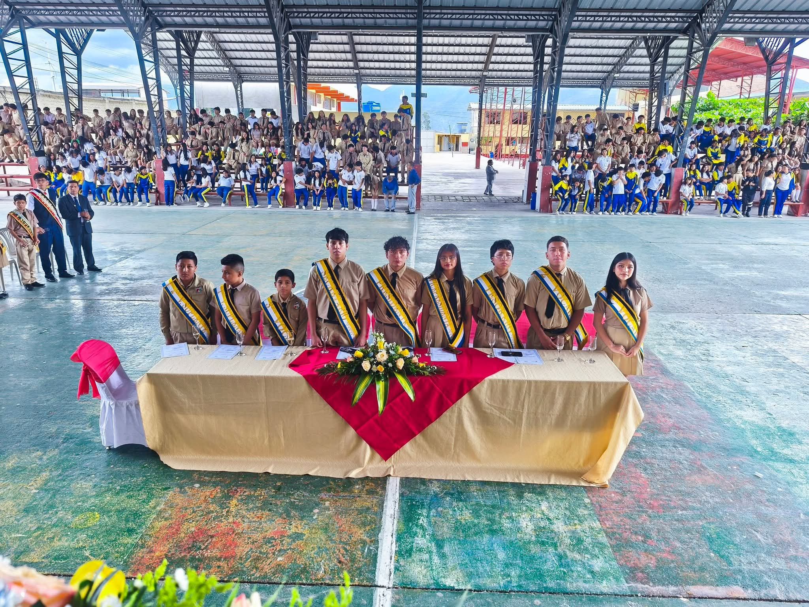
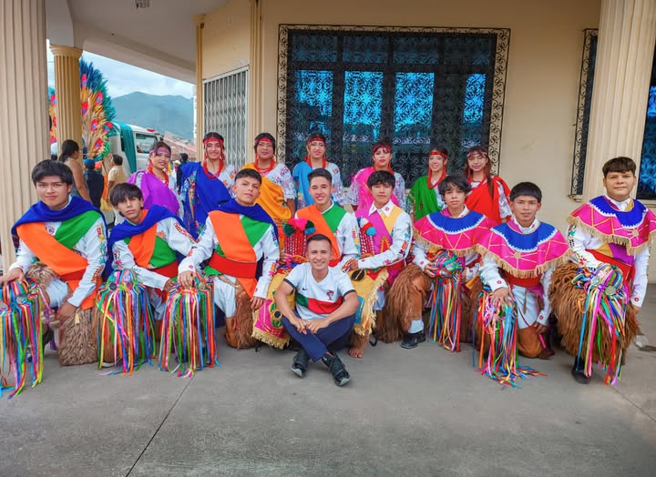
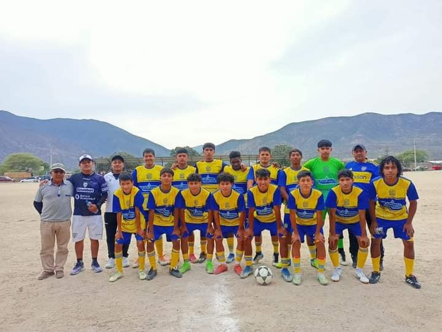
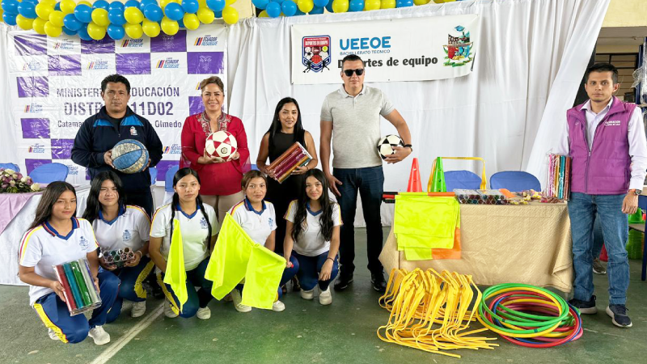

La Unidad Educativa Emiliano Ortega Espinoza (UEEOE) llevó a cabo la posesión oficial del Consejo Estudiantil correspondiente al período lectivo 2025 – 2026, en un acto solemne que reafirma el compromiso institucional con la democracia, la participación estudiantil y el liderazgo juvenil.
Durante la ceremonia, las autoridades educativas destacaron la importancia del rol del Consejo Estudiantil como un organismo de representación, diálogo y gestión, encargado de promover iniciativas académicas, culturales, deportivas y sociales en beneficio de toda la comunidad estudiantil.
Los estudiantes electos asumieron con responsabilidad el compromiso de trabajar con transparencia, respeto y dedicación, fortaleciendo los valores institucionales y fomentando la convivencia armónica dentro de la institución.

La UEEOE continúa impulsando actividades cívicas y culturales que refuerzan la identidad institucional y el respeto por los símbolos patrios y valores nacionales.
Estas actividades incluyen actos conmemorativos, presentaciones artísticas, declamaciones, danzas tradicionales y espacios de reflexión histórica, permitiendo a los estudiantes desarrollar habilidades expresivas y fortalecer su sentido de pertenencia.
La participación activa de docentes y estudiantes demuestra el compromiso de la institución con una formación integral, que equilibra el aprendizaje académico con el desarrollo cultural y social.

Los estudiantes de la Unidad Educativa Emiliano Ortega Espinoza han tenido una destacada participación en eventos deportivos a nivel intercolegial, demostrando disciplina, esfuerzo y espíritu deportivo.
Estas competencias fortalecen el desarrollo físico y emocional de los estudiantes, promoviendo valores como la perseverancia, el trabajo en equipo, el respeto y la vida saludable.
La institución reafirma su compromiso con el deporte como una herramienta fundamental para la formación integral de los jóvenes.

La Unidad Educativa Emiliano Ortega Espinoza fortaleció el área de Educación Física mediante la entrega e implementación de nuevos implementos deportivos, con el objetivo de mejorar el desarrollo físico, la recreación y el rendimiento deportivo de los estudiantes.
Entre los implementos adquiridos se incluyen balones de fútbol, baloncesto y voleibol, mallas deportivas, conos de entrenamiento, uniformes y material complementario que permitirá realizar actividades prácticas de manera segura y organizada.
Esta iniciativa beneficia a estudiantes de todos los niveles educativos, promoviendo hábitos de vida saludable, disciplina, trabajo en equipo y el fortalecimiento de habilidades motrices, además de incentivar la participación en competencias internas e intercolegiales.
La institución reafirma su compromiso con una educación integral, reconociendo al deporte como un pilar fundamental en la formación académica, social y emocional de los estudiantes.
